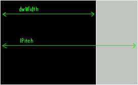
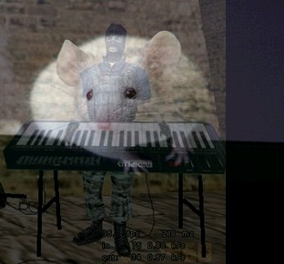

| Spis Strona g³ówna |
W wielu grach wystêpuje efekt, zwany fade-out (obraz stopniowo zaciemnia siê, a¿ staje siê ca³kowicie czarny, dlatego te¿ efekt ten bywa te¿ nazywany fade to black - lubicie Metallikê? ;-)) lub fade-in (na czarnym ekranie stopniowo pojawia siê obraz). Mo¿na te¿ spotkaæ coœ w rodzaju po³¹czenia tych dwóch efektów - jeden obraz przechodzi stopniowo w drugi. Wszystko to zazwyczaj znacznie podnosi estetyczne walory gry, wiêc warto wiedzieæ, jak siê to robi. Jeœli nie dysponujemy akurat bibliotek¹ graficzn¹, która posiada specjalnie stworzone w tym celu funkcje, mo¿emy sami zaimplementowaæ podobne efekty.
Zacznijmy od œciemy - dos³ownie i w przenoœni :-). Na ch³opski rozum efekt fade-out polega po prostu na stopniowym zmniejszaniu jasnoœci pikseli. W modelu HSL jest to wrêcz banalne do wykonania - wystarczy zmniejszaæ sk³adow¹ Lightness. Jednak w WinAPI i DirectX stosowany jest raczej model RGB, gdzie zreszt¹ przyciemnianie pikseli jest równie¿ stosunkowo proste. Wystarczy proporcjonalnie zmniejszaæ wszystkie trzy sk³adowe koloru. Proporcjonalnie, a wiêc najlepiej mno¿yæ je przez liczbê z zakresu <0; 1>. Tak wiêc trzeba roz³o¿yæ ka¿dy piksel na trzy sk³adowe, ka¿d¹ przemno¿yæ przez "wspó³czynnik zaciemnienia" i z powrotem z³o¿yæ w 32-bitow¹ liczbê.
Oczywiœcie potrzebujemy bezpoœredniego dostêpu do powierzchni DirectDraw, aby siê w coœ takiego pobawiæ. Dlatego zaczynamy od zablokowania powierzchni ekranu. Zak³adaj¹c wiêc, ¿e mamy ju¿ wszystko zainicjalizowane, ustawiony tryb 32-bitowy, rozdzielczoœæ 800x600 i gotowy obraz wczytany na powierzchniê ekranu (dostêpn¹ pod globalnym wskaŸnikiem g_lpScreen), piszemy...
Odpalamy (z samodzielnym napisaniem nie mia³eœ problemu, gdy¿ czytasz uwa¿nie moje kursy ;-P) i... rozczarowanie. Wprawdzie obraz siê zaciemnia, ale trwa to ca³e wieki. Dlaczego tak siê dzieje? Czy¿ nie stosujemy bezpoœredniego dostêpu do powierzchni, który jest najszybsz¹ metod¹ manipulowania pikselami? Czy¿ nie piszemy w jêzyku C++, tak samo jak twórcy dziesi¹tek gier, w których fade-out dzia³a znacznie szybciej? Wiêc co jest, doktorku?
Podstawowym b³êdem, który byæ mo¿e pope³niliœmy, by³o grzebanie w pikselach powierzchni ekranu. Tak-siê-nie-robi. Powinniœmy raczej utworzyæ robocz¹ powierzchniê pozaekranow¹, przekopiowaæ do niej obraz, ca³y proces przyciemniania wykonaæ na tej powierzchni pozaekranowej, wreszcie skopiowaæ rezultat na ekran.
Kolejn¹ potencjaln¹ pu³apk¹ jest formu³a wyliczania indeksu piksela do zmodyfikowania, któr¹ przedstawi³em w odcinku o bezpoœrednim dostêpie do powierzchni:
|
((DWORD*)ddsd.lpSurface)[ddsd.dwWidth * y + x] = k; |
Jest metoda dobra, ale nie bardzo dobra - dzia³a najzupe³niej prawid³owo, ale niekoniecznie z optymaln¹ wydajnoœci¹. Mamy tu bardzo kosztowne obliczeniowo mno¿enie, które nie jest tu tak naprawdê do niczego potrzebne. Bierzemy przecie¿ po prostu kolejne piksele. O wiele lepiej by by³o po prostu przesuwaæ wskaŸnik na bity powierzchni o 1 dla ka¿dego piksela. Wtedy mielibyœmy do czynienia jedynie z szybkim dodawaniem.
I wreszcie ostatni, najbardziej ¿mudny trick optymalizacyjny. Tracimy sporo mocy obliczeniowej na rozk³adanie koloru ka¿dego piksela na sk³adowe, mno¿enie ka¿dej sk³adowej przez liczbê zmiennoprzecinkow¹ (o zmiennoprzecinkowym liczniku zewnêtrznej pêtli nawet nie ma co wspominaæ), sk³adanie piksela z powrotem w liczbê 16-bitow¹. Co mo¿na z tym zrobiæ?
Mo¿emy... stablicowaæ wszystkie wykorzystywane odcienie dla wszystkich mo¿liwych kolorów! Spytasz pewnie, czy taka tablica nie bêdzie przypadkiem zajmowa³a zbyt du¿o miejsca. Oczywiœcie, bêdzie. Nawet jeœli zmienimy tryb na 16-bitowy (stablicowanie wszystkich 16 777 216 kolorów trybu 24-bitowego i 32-bitowego oczywiœcie nie jest zbyt praktycznym pomys³em ;-)), to i tak tablica bêdzie spora. Policzmy: 65000 * 30 * 2 daje razem prawie 4 MB! (30 jest to za³o¿ona przez nas liczba iteracji, czyli mo¿liwych odcieni ka¿dego piksela w efekcie fadingu, a 2 - tyle bajtów tworzy 16 bitów) Jednak w dzisiejszych czasach nie jest to a¿ tak wiele, wiêc mo¿emy sobie bez problemu wygenerowaæ tak¹ tablicê, któr¹ - gdyby nam zaczê³o brakowaæ miejsca w RAM-ie, zawsze mo¿na zrzuciæ tymczasowo na dysk.
Zanim przyst¹pimy do dzia³ania, ujmiemy w procedury garœæ operacji, które bêdziemy musieli wykonywaæ czêsto. Operacje te to: tworzenie powierzchni, blokowanie i odblokowywanie. Wszystko to ju¿ robiliœmy w poprzednich odcinkach kursu DirectDraw, wiêc w szczegó³y nie wchodzimy. Ewentualne w¹tpliwoœci rozwiej¹ siê póŸniej ;-).
|
LPDIRECTDRAWSURFACE DDCreateSurface(DWORD dwWidth, DWORD dwHeight, DWORD dwFlags) { LPDIRECTDRAWSURFACE temp = NULL; DDSURFACEDESC ddsd; ZeroMemory(&ddsd,sizeof(DDSURFACEDESC)); ddsd.dwSize = sizeof(DDSURFACEDESC); ddsd.dwFlags = DDSD_CAPS | DDSD_WIDTH | DDSD_HEIGHT; ddsd.ddsCaps.dwCaps = DDSCAPS_OFFSCREENPLAIN | dwFlags; ddsd.dwWidth = dwWidth; ddsd.dwHeight = dwHeight; if(lpDD->CreateSurface(&ddsd, &temp, NULL) != DD_OK) return NULL; return temp; } |
Oczywiœcie zak³adamy tu, ¿e lpDD jest globalnym wskaŸnikiem na obiekt g³ówny DirectDraw.
|
WORD *DDLockSurface(LPDIRECTDRAWSURFACE lpSurf, int *lpitch) { DDSURFACEDESC ddsd; ZeroMemory(&ddsd,sizeof(DDSURFACEDESC)); ddsd.dwSize = sizeof(DDSURFACEDESC); lpSurf->Lock(NULL, &ddsd, DDLOCK_WAIT | DDLOCK_SURFACEMEMORYPTR, NULL); *lpitch = ddsd.lPitch >> 1; return (WORD*)ddsd.lpSurface; } void DDUnlockSurface(LPDIRECTDRAWSURFACE lpSurf) { lpSurf->Unlock(NULL); } |
Mo¿na dojœæ do wniosku, ¿e nie ma wiêkszego sensu tworzyæ funkcjê DDUnlockSurface, skoro wszystko, co ma ona za zadanie, to wywo³anie metody Unlock dla podanej powierzchni. Jednak jakoœ brzydko tak wygl¹da, gdy siê blokuje w³asn¹ funkcj¹, a odblokowuje funkcj¹ biblioteczn¹, wiêc niniejszym zapewniamy symetriê ;-).
Skoro ustaliliœmy sobie, ¿e bêdziemy dzia³aæ w trybie 16-bitowym, to wypada³oby wiedzieæ, jak dok³adnie zbudowany jest piksel w tym trybie. W trybie 32-bitowym wszystko jest stosunkowo proste: mamy 4 bajty na piksel, przy czym trzy opisuj¹ kolor (ka¿dy bajt to inna sk³adowa w modelu RGB), czwarty jest zarezerwowany na kana³ alfa. Ale jak podzieliæ dwa bajty (czyli 16 bitów) miêdzy trzy sk³adowe? Wybrniêto z tego problemu w ten sposób, ¿e jedna ze sk³adowych jest "uprzywilejowana" i dostaje 6 bitów, zaœ pozosta³e dwie - po 5. Ta "uprzywilejowana" sk³adowa to umownie zieleñ (kolor ¿ycia, jak by nie by³o ;-)). Tak wiêc mo¿na sobie wyobraziæ przyk³adowy piksel w postaci binarnej:
1111111111111111
Poniewa¿ mamy tu same jedynki, z ca³¹ pewnoœci¹ piksel ten jest bia³y, ale mniejsza z tym. Powinniœmy raczej skupiæ nasze mózgownice na tym, jak wy³uskaæ poszczególne sk³adowe z takiej 16-bitowej liczby oraz jak je potem z³o¿yæ z powrotem - takie bowiem operacje bêdziemy wykonywaæ (o czym ju¿ sobie zreszt¹ wspomnieliœmy). Zacznijmy od prostszej rzeczy, czyli w³aœnie od sk³adania. Wystarczy tu tylko przesun¹æ bity na odpowiednie pozycje, zgodnie ze schematem, który przedstawiliœmy powy¿ej oraz po przesuniêciu pododawaæ do siebie:
|
#define KOLOR16(r, g, b) ( (r << 11) | (g << 5) | b ) |
Nieco wiêcej zachodu jest z rozk³adaniem. Musimy tu skorzystaæ z masek, aby "usun¹æ" (wyzerowaæ) z danej liczby wszystkie bity oprócz tych, które nas akurat interesuj¹. Przesuwamy w tym celu wszystkie bity, które le¿¹ na lewo od bitów interesuj¹cej nas sk³adowej, poza "obrêb" naszych 16 bitów. Nastêpnie aplikujemy maskê za pomoc¹ operatora AND - operacja ta usuwa lew¹ czêœæ nieinteresuj¹cych nas bitów. Wreszcie przesuwamy w prawo pozosta³e bity, by usun¹æ praw¹ czêœæ zbêdnych bitów. W przypadku czerwonej sk³adowej musimy oczywiœcie wykonaæ tylko przesuniêcie w prawo, gdy¿ po lewej nie ma ¿adnych bitów danych:
|
#define RED(k) ( (k >> 11) ) #define GREEN(k) ( ((k << 5) & 0xFFFF) >> 10 ) #define BLUE(k) ( ((k << 11) & 0xFFFF) >> 11 ) |
Mamy wiêc makra, które zapewni¹ nam ³atw¹ obs³ugê koloru 16-bitowego. Pora na wspomnian¹ du¿¹ tablicê odcieni pikseli. Oto ona:
|
WORD Odcien[30][65536]; |
Generowanie tablicy bêdzie wygl¹da³o mniej wiêcej tak:
|
void InicjalizujOdcienie() { const double alfa[30] = { 0.00, 0.01, 0.04, 0.08, 0.12, 0.16, 0.20, 0.24, 0.28, 0.32, 0.36, 0.40, 0.44, 0.48, 0.51, 0.54, 0.58, 0.61, 0.65, 0.68, 0.72, 0.75, 0.79, 0.82, 0.86, 0.89, 0.93, 0.96, 0.99, 1.00 }; for(int i=0;i<30;++i) for(int j=0;j<65536;++j) Odcien[i][j] = KOLOR16((BYTE)(RED(j)*alfa[i]), (BYTE)(GREEN(j)*alfa[i]), (BYTE)(BLUE(j)*alfa[i])); } |
Có¿ my tu mamy? Wartoœci w tablicy alfa odpowiadaj¹ po prostu procentowemu "zaciemnieniu" obrazu i ró¿nica miêdzy nimi jest mniej wiêcej sta³a (pi razy drzwi ;-)), aby zapewniæ z³udzenie p³ynnoœci zanikania obrazu. Jest 30 wspó³czynników alfa - tyle samo, ile bêdzie naszych etapów "zaciemniania". Nastêpnie dla ka¿dego z tych etapów (dla ka¿dego wspó³czynnika alfa) i dla ka¿dego z 65 tys. kolorów obliczamy odcieñ piksela, korzystaj¹c ze zdefiniowanych wczeœniej makr RED, GREEN i BLUE. W ten oto sposób tablica Odcien zostaje wype³niona.
Teraz droga do optymalizacji jest ju¿ prosta. Stworzyliœmy sobie tak¹ oto procedurkê "fejdinguj¹c¹", któr¹ za chwilê dok³adniej sobie objaœnimy:
|
void DDFadeToBlack() { RECT rect = {0, 0, 800, 600}; // prostok¹t kadruj¹cy - obejmuje ca³y ekran WORD *tmp, *ref, *prm; // wskaŸniki na piksele powierzchni WORD *wsk_tmp, *wsk_prm; // wskaŸniki pomocnicze do kopiowania na pow. ekranu WORD *fastref, *fasttmp; // "szybkie" wskaŸniki int tpitch, rpitch, ppitch; WORD *lpOdcien; LPDIRECTDRAWSURFACE lpTemp, lpRef; // Stwórz powierzchnie robocze lpTemp = DDCreateSurface(800, 600, DDSCAPS_SYSTEMMEMORY); lpRef = DDCreateSurface(800, 600, DDSCAPS_SYSTEMMEMORY); // Blituj obraz na ekranie do powierzchni roboczej lpRef->Blt(&rect, g_lpScreen, &rect, DDBLT_WAIT, NULL); // Zablokuj powierzchnie tmp = DDLockSurface(lpTemp, &tpitch); ref = DDLockSurface(lpRef, &rpitch); prm = DDLockSurface(g_lpScreen, &ppitch); for(int c=29; c>=0; --c) { // pobierz odpowiedni fragment tablicy odcieni lpOdcien = Odcien[c]; // inicjalizuj "szybkie" wskaŸniki fastref = ref; fasttmp = tmp; // dla ka¿dego piksela powierzchni (800*600=480000) for(int i=0; i<480000; ++i,++fasttmp,++fastref) *fasttmp = lpOdcien[*fastref]; // kopiuj roboczy obszar na powierzchniê ekranu wsk_prm = prm; wsk_tmp = tmp; for(int i=0; i<600; ++i) // dla ka¿dej linii obrazu { memcpy(wsk_prm, wsk_tmp, 1600); wsk_prm += ppitch; wsk_tmp += tpitch; } // ¿eby w ogóle da³o siê coœ zauwa¿yæ - ma³e opóŸnienie ;-) Sleep(20); } // odblokowanie powierzchni DDUnlockSurface(lpTemp); DDUnlockSurface(lpRef); DDUnlockSurface(g_lpScreen); // sprz¹tanie lpTemp->Release(); lpRef->Release(); } |
Procedurka dzia³a tak: najpierw tworzy sobie dwie powierzchnie robocze. W pierwszej (lpRef) bêd¹ pobierane wyjœciowe wartoœci pikseli, w drugiej (lpTemp) bêd¹ zapisywane piksele po przetworzeniu. Z powierzchni ekranu (g_lpScreen) nie bêdziemy ani odczytywaæ, ani zapisywaæ, gdy¿ by³oby to zbyt powolne. Dlatego jeœli chcemy skopiowaæ coœ z powierzchni ekranu lub na ni¹, to korzystamy albo z Blt (BltFast), albo ewentualnie funkcji typu memcpy - nigdy nie kopiujemy pojedynczych bajtów w pêtli.
Nastêpnym krokiem jest zablokowanie powierzchni. U¿yta funkcja DDLockSurface (zdefiniowana powy¿ej) zwraca przy okazji parametr pitch dla blokowanej powierzchni oraz wskaŸnik do pikseli powierzchni (zaraz powiemy, co to ten pitch ;-)).
Wreszcie wchodzimy w pêtlê, powtarzan¹ 30 razy (czyli dla ka¿dego stadium zaciemnienia). Najpierw pobieramy wskaŸnik (lpOdcien), który bêdzie nam wskazywa³ fragment tablicy Odcien, odpowiadaj¹cy aktualnej fazie zaciemnienia (c). Inicjalizujemy wskaŸniki fastref i fasttmp, tak aby wskazywa³y na pocz¹tek powierzchni roboczych. Nastêpnie w wewnêtrznej pêtli dla kolejnych 480 000 pikseli (tyle liczy sobie ekran w rozdzielczoœci 800x600) pobieramy now¹ wartoœæ piksela z tablicy Odcien poprzez wskaŸnik lpOdcien. Dodatkowe przyœpieszenie uzyskujemy dziêki u¿yciu wskaŸników fasttmp i fastref - operacja '++' dzia³a szybciej, ni¿ '+=2' (zw³aszcza, gdy wykonywana jest w bloku kontrolnym pêtli), natomiast '++' dla zmiennej WORD* daje ten sam efekt, co '+=2' dla WORD.
Po wyjœciu z wewnêtrznej pêtli mamy ju¿ w roboczej powierzchni lpTemp przygotowan¹ "zaciemnion¹ wersjê" obrazu. Wystarczy j¹ wyœwietliæ, czyli skopiowaæ na powierzchniê ekranu. Poniewa¿ jednak powierzchnia ekranu jest nadal zablokowana, nie mo¿emy skorzystaæ z metody Blt czy FastBlt. Nie mo¿emy te¿ odblokowaæ powierzchni, gdy¿ jest to zbyt czasoch³onna operacja i mog³aby zmniejszyæ wydajnoœæ, o któr¹ tak dzielnie walczymy. Jedynym wyjœciem jest skopiowanie bajtów "rêcznie", czyli na przyk³ad za pomoc¹ standardowej funkcji memcpy. Niestety, nie mo¿emy tego uczyniæ przez pojedyncze wywo³anie memcpy (co by³oby z pewnoœci¹ najszybsze), a to ze wzglêdu na parametr lPitch powierzchni...
Tutaj ma³a dygresja. Sk³adowa lPitch nale¿y do struktury DDSURFACEDESC. Nie wspomnia³em o niej w odcinku o bezpoœrednim dostêpie do powierzchni, a byæ mo¿e powinienem. Otó¿ pamiêæ powierzchni bywa czasem wype³niona zupe³nie nas nie interesuj¹cymi "œmieciami". Z tego wzglêdu ka¿da linia obrazu mo¿e zajmowaæ wiêcej, ni¿ wynika³oby z formu³y rozdzielczoœæ_pozioma * 2_bajty. Najlepiej to zrozumieæ na obrazku:

Jak widaæ, po prawej mamy szary prostok¹t - to w³aœnie obszar, który nas w tym momencie w ogóle nie interesuje. Wystêpuje on z regu³y tylko w przypadku powierzchni g³ównej ekranu oraz tych powierzchni pozaekranowych, na których wykonujemy obroty. Tutaj ¿adnych obrotów nie potrzebujemy, wiêc "szary obszar" dotyczy tylko powierzchni ekranu. Niemniej kopiowanie pikseli musimy zrealizowaæ w pêtli, uwzglêdniaj¹c przesuniêcie linii (pitch). Poniewa¿ metoda Lock us³u¿nie zwraca nam przesuniêcie blokowanej powierzchni, skorzystamy z tego i w ten w³aœnie sposób pobierzemy przesuniêcie dla powierzchni ekranu. Natomiast piksele kopiujemy w ten sposób, ¿e bierzemy pojedyncz¹ liniê (1600 bajtów), przesuwamy wskaŸnik "nad szarym obszarem", bierzemy kolejne 1600 bajtów, itd.
Musimy jeszcze gdzieœ wywo³aæ stworzone przez nas procedurki:
|
InicjalizujOdcienie(); DDFadeToBlack(); |
I tak oto zrobiliœmy wreszcie stopniowe zanikanie obrazu. Czy teraz jest ono optymalne? Przekonaj siê sam. Powiem tylko, ¿e raczej nie jest ju¿ mo¿liwe jakieœ znacz¹ce zwiêkszenie wydajnoœci przedstawionych algorytmów. Natomiast jakieœ drobne optymalizacje zawsze da siê wynaleŸæ, tyle, ¿e chyba szkoda zachodu...
Wspomnê jeszcze, i¿ przez analogiê ³atwo mo¿emy teraz zrobiæ efekt odwrotny, czyli stopniowe pojawianie siê bitmapy na pustym ekranie. Wystarczy dokonaæ odpowiednich zmian w zewnêtrznej pêtli oraz oczywiœcie zamieniæ powierzchnie (tj. bitmapê blitujemy nie z powierzchni ekranu, tylko z wczeœniej przygotowanej powierzchni pozaekranowej). Potraktujmy to jako pracê domow¹ ;-).
Drugim efektem, który mo¿emy wykonaæ niejako z rozpêdu, jest tzw. alfa-blending, czyli wzajemne przenikanie siê dwóch bitmap. Jest to nic innego, jak tylko po³¹czenie opisanego wy¿ej efektu fade-out z efektem fade-in. Z tego powodu zreszt¹ alfa-blending bywa te¿ nazywany cross-fading (albo jeszcze inaczej: alpha transition).
Do tego efektu potrzebowaæ bêdziemy a¿ czterech powierzchni jednoczeœnie. Oprócz powierzchni ekranu (co oczywiste) u¿yjemy po jednej powierzchni referencyjnej dla ka¿dego z dwóch obrazków. Jedn¹ bêdziemy nazywaæ Ÿród³ow¹ (lpSrc) - to bêdzie ten obrazek, który na pocz¹tku jest widoczny, a potem stopniowo zanika. Druga bêdzie zwana powierzchni¹ docelow¹ (lpDst) - obrazek, którego na pocz¹tku nie widaæ, a póŸniej stopniowo pojawia siê. Czwarta powierzchnia to powierzchnia robocza, w której bêdziemy zapisywaæ wynik blendingu.
W procedurce DDFadeToBlack mieliœmy wskaŸnik lpOdcien, który wykorzystywaliœmy do wskazywania na odpowiedni fragment tablicy Odcien. Tym razem bêdziemy potrzebowaæ dwóch takich wskaŸników. Jeden bêdzie pokazywaæ na pocz¹tek wspomnianej tablicy, drugi na koniec i w miarê wykonywania kolejnych iteracji algorytmu wskaŸniki te bêd¹ siê do siebie zbli¿a³y, a nastêpnie "wymin¹ siê" i znowu zaczn¹ oddalaæ. Nazwiemy je AlphaPtr i InvAlphaPtr.
Poniewa¿ mamy wiêcej powierzchni, bêdzie te¿ wiêcej "szybkich" wskaŸników. Pytanie tylko - jak¹ w³aœciwie operacjê wykonamy w celu "zmiksowania" kolorów pikseli, pochodz¹cych z dwóch obrazów? Otó¿ wystarczy... zwyk³e dodawanie:
|
*fasttmp = AlphaPtr[*fastsrc] + InvAlphaPtr[*fastdst]; |
Jeœli wydaje ci siê to trochê dziwne, to przypomnij sobie, ¿e dok³adnie to samo robiliœmy przy efekcie fade-out. Tyle tylko, ¿e tam obraz docelowy by³ czarny, a wiêc do wartoœci piksela nic nie trzeba by³o dodawaæ (innymi s³owy: dodawaliœmy zero).
Poza opisanymi przed chwil¹ drobiazgami procedura, któr¹ nazwiemy sobie DDAlphaTransition, nie bêdzie siê zbytnio ró¿niæ od DDFadeToBlack. Tak wiêc nie przed³u¿ajmy gadaniny i weŸmy siê do dzie³a.
|
void DDAlphaTransition() { RECT rect = {0, 0, 800, 600}; // prostok¹t kadruj¹cy - obejmuje ca³y ekran WORD *tmp, *src, *dst, *prm; // wskaŸniki na piksele powierzchni WORD *wsk_tmp, *wsk_prm; // wskaŸniki pomocnicze do kopiowania na pow. ekranu WORD *fastsrc, *fasttmp, *fastdst; // "szybkie" wskaŸniki int spitch, tpitch, dpitch, ppitch; LPDIRECTDRAWSURFACE lpTemp, lpSrc, lpDst; WORD *AlphaPtr, *InvAlphaPtr; // Stwórz powierzchnie robocze lpTemp = DDCreateSurface(800, 600, DDSCAPS_SYSTEMMEMORY); lpSrc = DDCreateSurface(800, 600, DDSCAPS_SYSTEMMEMORY); lpDst = DDCreateSurface(800, 600, DDSCAPS_SYSTEMMEMORY); // Blituj obraz na ekranie (znikaj¹cy) do powierzchni roboczej Ÿród³owej lpSrc->Blt(&rect, g_lpScreen, &rect, DDBLT_WAIT, NULL); // ...i drugi obraz (pojawiaj¹cy siê) do powierzchni docelowej lpDst->Blt(&rect, g_lpImage, &rect, DDBLT_WAIT, NULL); // Zablokuj powierzchnie tmp = DDLockSurface(lpTemp, &tpitch); src = DDLockSurface(lpSrc, &spitch); dst = DDLockSurface(lpDst, &dpitch); prm = DDLockSurface(g_lpScreen, &ppitch); for(int alfa=29; alfa>=0; --alfa) { // pobierz odpowiedni fragment tablicy odcieni AlphaPtr = Odcien[alfa]; InvAlphaPtr = Odcien[29-alfa]; // inicjalizuj "szybkie" wskaŸniki fastsrc = src; fastdst = dst; fasttmp = tmp; // dla ka¿dego piksela powierzchni (800*600=480000) for(int i=0; i<480000; ++i,++fasttmp,++fastsrc,++fastdst) *fasttmp = AlphaPtr[*fastsrc] + InvAlphaPtr[*fastdst]; // kopiuj roboczy obszar na powierzchniê ekranu wsk_prm = prm; wsk_tmp = tmp; for(int i=0; i<600; ++i) // dla ka¿dej linii obrazu { memcpy(wsk_prm, wsk_tmp, 1600); wsk_prm += ppitch; wsk_tmp += tpitch; } // ¿eby w ogóle da³o siê coœ zauwa¿yæ - ma³e opóŸnienie ;-) Sleep(20); } // odblokowanie powierzchni DDUnlockSurface(lpTemp); DDUnlockSurface(lpSrc); DDUnlockSurface(lpDst); DDUnlockSurface(g_lpScreen); // sprz¹tanie lpTemp->Release(); lpSrc->Release(); lpDst->Release(); } |
Gotowe. Nie by³o tak trudno, a jeœli nawet, to po kilkakrotnym przeczytaniu artyku³u i przeanalizowaniu przyk³adowego kodu w¹tpliwoœci na pewno znikn¹. Teraz pozostaje tylko wykorzystaæ opisane efekty w twoich grach ;-).

| Spis Strona g³ówna |